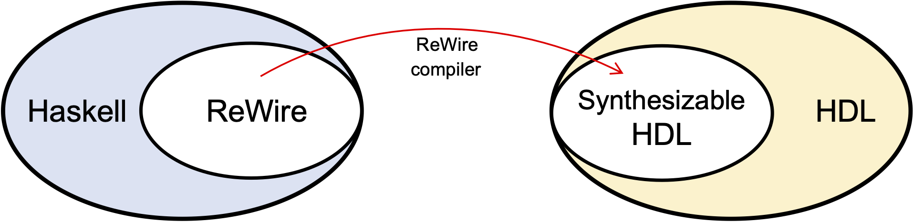

Hello Worlds
This first chapter introduces ReWire and collects the simplest possible examples.
What is ReWire?
ReWire is a domain-specific language embedded in the Haskell functional programming language (https://haskell.org). Every ReWire program is a Haskell program that can be executed just as any other Haskell program. This fact is simple and also very powerful, because it means that development of a hardware design can proceed incrementally, one function at a time, with the resulting new code being type-checked and/or tested. Once a developer is satisfied with their ReWire design, they can compile it automatically into synthesizable HDLs (hardware definition languages) like Verilog, VHDL, and FIRRTL.
Mealy Machines and ReWire types
There's a mental model of digital circuitry used by hardware designers known as a Mealy machine. The flavor favored by hardware designers is portrayed below, which will seem odd to those of us who first heard of them from a class in theoretical computer science (e.g., https://en.wikipedia.org/wiki/Mealy_machine). Mealy machines are finite state machines combined with a clock that on each clock "tick" consume an input of type i, update a store of type s, and produce an output of type o.

In ReWire, there is a type corresponding to the Mealy machine above, the monadic type:
ReacT i o (StateT s Identity) ()
And, because it occurs so frequently, we refer to it as a device type some times. Things of this type are those that can be compiled to hardware.